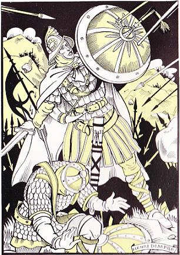

Altabizkarko Kantua
Le chant d'Altabiscar - The Altabiscar Song
|
Poème épique publié en 1835, soi-disant contemporain de la Chanson de Roland En réalité, écrit en français en 1828 par François-Eugène Moncla, dit "Garay de Monglave" (Bayonne 1796 - Paris 1873) et traduit en basque moderne (!) par Louis Duhalde d'Espelette. |
Epic published in 1835, allegedly as old as the "Song of Roland". In fact, it was written in French in 1828 by François-Eugène Moncla, whose nom-de-plume was "Garay de Monglave" (Bayonne 1796 - Paris 1873) and translated into modern Basque (!) by Louis Duhalde from Espelette. |
|
Illustration d'Henri Dimpre (1907 - 1971) tirée des "Contes et Légendes du Pays Basque", Fernand Nathan, 1954 L'auteur, René Thomasset (alias Thomas Estener ou Laborde-Guiche), présente à son jeune public, en toute bonne foi, une longue et belle transcription en alexandrins en partie rimés, comme une authentique chanson des temps anciens qui "fut rédigée en basque exclusivement". Il fait suivre cette pièce d'une autre traduction en vers de l'authentique Chant d'Abarca, du 13ème siècle, qui raconte le combat de Las Navas de Tolosa entre les Maures et les Basques navarrais, guipuzcoans et labourdins, près de Pampelune en 1212. |
 |
Illustration by Henri Dimpre (1907 - 1971) from "Contes et légendes du Pays Basque", Fernand Nathan, 1954 The author, René Thomasset (alias Thomas Estener or Laborde-Guiche), is perfectly sincere when he introduces to his young readers, as a genuine old cantilena "exclusively composed in Basque language", his own long and beautiful metrical verse translation. He appends to this piece a verse translation of another undoubtedly authentic 13th century Basque poem, the Song of Abarca, recording the fight of Las Navas de Tolosa between the Moors and the Basques of Navarra, Guipuzcoa and Labourd, near Pamplona in 1212. |
|
ALTABIZKARKO KANTUA 1. Oihu bat aditua izan da Eskualdunen mendien artetik, eta etxeko jaunak bere atearen aitzinean xutik, ideki tu beharriak eta erran du: "Nor da hor? Zer nahi daute?" Eta xakurra, bere nausiaren oinetan lo zegoena altxatu da eta karrasiz Altabizkarren inguruak bete ditu. 2. Ibañetaren lepoan harrabotsbat agertzen da, hurbiltzen da, arrokak ezker eta eskuin jotzen dituelarik; hori da hurrundik heldu den armada baten burrunba. Mendien kopetetarik guriek errespuesta eman diote; berek duten seinua adierazi dute, ta etxeko jaunak bere dardak zorrozten tu. 3. Heldu dira! Heldu dira! Zer lantzazko sasia! Nola zer nahi kolorezko banderak heien erdian agertzen diren! Zer zimiztak atheratzen diren heien armetarik! Zenbat dira? Haurra, kontatzak ongi. Bat, biga, hirur, laur, bortz, sei, zazpi, zortzi, bederatzi hamar, hameka, hamabi, hamairur, hamalaur, hamabortz, hamasei, hamazazpi, hemezortzi, hemeretzi, hogoi. 4. Hogoi eta milaka oraino. Heien kontatzea denboraren galtzea liteke. Hurbil ditzagun gure beso zailak, errotik athera ditzagun arroka horiek. Botha dezagun mendiaren patarra behera. Heien buruen gaineraino; leher ditzagun, herioz jo ditzagun. 5. Zer nahi zuten gure mendietarik Norteko gizon horiek? Zertako jin dira guro bakearen nahastera? Jinkoak mendiak egin dituanean, gizonek ez pasatzea nahi izan du. Bainan arrokak biribilkolika erortzen dira, tropak lehertzen dituzte. Odola xurrutan badoa, haragi puskak dardaran daude. Oh! Zenbat hezur karraskatuak! Zer odolezko itsasoa! 6. Eskapa! Eskapa! Indar ata zaldi dituzuenak. Eskapa hadi, Karlomano errege, hiru luma beltzekin ata hire kapa gorriarekin; hire hiloba maitea, Errolan zangarra, hantxet hila dago; bere zangartasuna beretzako ez du izan. Eta orain, Euskaldunak, utz ditzagun arroka horiek. Jauts ghiten fite, igor ditzaugun gure dardak eskapatzen direnen kontra. 7. Badoazi! Badoazi! Non da bada lantzazko sasi hura? Non dira heien erdian ageri ziren zernahi kolorezko bandera hek. Ez da gehiago zimiztarik ateratzen heien arma odolez betetarik. Zenbat dira? Haurra, kontatzak ongi. Hogoi, hemeretzi, hemezortzi, hamazazpi, hamasei, hamabortz, hamalaur, hamairur, hamabi, hameka, hamar, bederatzi, zortzi, zazpi, sei, bortz, laur, hirur, biga, bat. 8. Bat! Ez da bihirik agertzen gehiago. Akabo da. Etxeko jauna, joaiten ahal zira zure xakurrarekin. Zure emaztearen eta zure haurren besarkatzera. Zurer darden garbitzera ata altxatzera, zure turutakin eta gero heien gainean etzatera eta lo itera Gabaz, arranoak joanen dira haragi puska lehertu horien jatera. Eta hezur horiek oro xurituko dira eternitatean. |
LE CHANT D'ALTABISCAR [1] 1. Un cri sest élevé du milieu des montagnes des Escualdunacs et lEtcheco-jauna (maître de la maison), debout devant sa porte, a ouvert loreille, et il a dit Qui va là ? Que me veut-on? Et le chien qui dormait aux pieds de son maître sest levé, et il a rempli les environs dAltabiscar de ses aboiements. 2. Au col dIbañeta, un bruit retentit. il approche en frôlant à droite, à gauche les rochers: Cest le murmure sourd dune armée qui vient. Les nôtres y ont répondu du sommet des montagnes; ils ont soufflé dans leurs cornes de buf, et lEtcheco-jauna aiguise ses flèches. 3. Ils viennent, ils viennent! Quelle haie de lances! Comme les bannières versicolores flottent au milieu! [3] A-t-on jamais vu si grande armée? Combien sont-ils ? Enfant, compte-les bien! Un, deux, trois, quatre, cinq, six, sept, huit, neuf, Dix, onze, douze, treize, quatorze, quinze, seize, dix-sept, dix-huit, dix-neuf, vingt. 4. Vingt! et des milliers d'autres encore! A les compter, on perdrait son temps. [4] Unissons nos bras souples, Déracinons ces rochers! Lançons-les du haut de la montagne en bas, Jusque sur leurs têtes! Ecrasons-les, frappons-les de mort! 5. Et qu'avaient-ils à faire dans nos montagnes, Ces hommes du Nord? Troubler notre paix? Quand Dieu fît ces montagnes, Il voulut que les hommes ne les franchissent pas. Mais les rochers, en tournoyant, Tombent ils écrasent les troupes. Le sang ruisselle, les débris de chair palpitent! Oh combien d'os broyés! Quelle mer de sang! [5] 6. Fuyez! Fuyez! Vous à qui il reste de la force et un cheval! Fuis, roi Carloman, avec tes plumes Noires et ta cape rouge! Ton neveu, ton plus brave, ton chéri, Roland, est étendu mort là-bas. Son courage ne lui a servi à rien. [2] Et maintenant, Escualdunacs, quittons ces rochers! Descendons vite, lançons nos flèches contre ceux qui fuient! 7. Ils fuient! Ils fuient! Où donc est la haie de lances? Où sont ces bannières versicolores flottant au milieu d'eux? Les éclairs ne jaillissent plus De leurs armes souillées de sang. Combien sont-ils? Enfant, compte-les bien! - Vingt, dix-neuf, dix-huit, dix-sept, seize, quinze, Quatorze, treize, douze, onze, dix, neuf, Huit, sept, six, cinq, quatre, trois, deux, un. {4] 8. Un! Il n'y en a même plus un! C'est fini.. Etcheco-Yauna, vous pouvez rentrer avec votre chien, Embrasser votre femme et vos enfants, Nettoyer vos flèches et votre corne de buf, Et ensuite vous coucher et dormir. La nuit, les aigles viendront manger ces chairs écrasées, Les ossements des héros morts blanchissent déjà pour l'éternité... [5] Texte original de Monglave Victor Hugo avait trouvé ce texte transcrit par Jubinal dans le Journal du dimanche. Il en fit ces vers: 8. Le laboureur des monts, qui vit sous la ramée, Est rentré chez lui, grave et calme, avec son chien. Il a baisé sa femme au front et dit : C'est bien. Il a lavé sa trompe et son arc aux fontaines, Et les os des héros blanchissent dans les plaines. [6] |
THE ALTABISCAR SONG [1] 1. A cry arises From amidst the mounts of the Basque country. The house-master standing on his threshold Pricks his ears and says: Who is coming there? What do they want of me? The dog that slept at his master's feet Stands and barks: Its warning cry echoes off Altabiscar Mount. 2. From Ibañeta pass a distant rumble rises Louder and louder It reverberates to and fro down the rocky slopes. It is the stamping of an army drawing near. Our lads answer atop the mounts By blowing their horns And the house-master starts sharpening his arrows. 3. They come! They come! What a hedge of lances! Their manycoloured banners Stream in the wind! [3] Did you ever see so big an army? How many people are they? Count, child, count them well! - One, two, three, four, five, six, seven, eight, nine, Ten, eleven, twelve, thirteen, fourteen, fifteen, sixteen, Seventeen, eighteen, nineteen, twenty... 4. Twenty! And thousands of others coming! No use trying to count them all! [4] Let us unite our forces, brethren! Let us dig up those big rocks! - From the top of the mountain they hurl them down Onto their heads! Let us shatter them until they die! 5. - How durst they enter our hallowed mounts Those Northern men? How durst they disturb our peace? God wrought these mountains To keep peoples apart! - Meanwhile the rocks whirl down Onto the troops they crash to the ground. Blood flows and wounded flesh quivers! How many bones were ground? How much blood was spilt? [5] 6. Flee! Flee! If you have strength and a horse left! Flee, King Carloman with your black feathers And your red coat! The most gallant of your nephews, Roland, lies there. He died! His courage was in vain! [2] Now, Basque men, enough of these rocks! Hurry down! Riddle with your darts Those runaway warriors! 7. They flee! They flee! Where is the hedge of lances? Where the manycoloured banners Streaming in the wind? No more glittering blades! They have soiled them with their own blood! How many of them are left? Child, count them well! - Twenty, nineteen, eighteen, seventeen, sixteen, fifteen, Fourteen, thirteen, twelve, eleven, ten, nine, Eight, seven, six, five, four, three, two, one. [4] 8. One! Not even one is left! It's over! Master-of-the-house, you may go home with your dog, Kiss your wife and your children, Cleanse your arrows and your horn, And then go to bed and sleep. Overnight eagles will swoop down on this bruised flesh and devour it! The bones of the dead heroes are bleaching forever! [5] Original French text by Monglave Victor Hugo knew that text from a transcription by Jubinal contributed to the "Journal du dimanche". He turned it into verses of his own: 8. The mountain labourer under the leafy bough Went home, solemn and calm, with his dog. On the brow He kissed his wife and said: "All's well that endeth well!" He has washed in the stream the horn, the bow he wore... And the bones of the knights shall bleach forever more! [6] |
Notes
[1] C'est en 1835, qu'un obscur aventurier des lettres, Eugène Garay de Monglave, de son vrai nom François-Eugène Moncla, né à Bayonne le 5 mars 1796, mort en 1873 à Paris, publia une cantilène qu'il venait de découvrir. Elle avait trait à la bataille de Roncevaux, mais ce n'était pas une de celles que les compagnons de Roland auraient pu chanter, mais bien ses vainqueurs, les Basques. Elle apparaissait sous ce titre : Le Chant des Escualdunacs (c'est-à-dire des Basques) ou le Chant d' Altabiscar (Altabiscar est le nom de l'une des montagnes qui dominent Roncevaux). Il la publia en basque et en français. Il avait souvent entendu, assurait-il dans un avant-propos, les Escualdunacs chanter ce chant dans leurs montagnes. Il ajoutait que les Escualdunacs ont peu écrit, car « ils ne se nourrissent guère que de traditions verbales » ; que néanmoins, outre les versions par lui recueillies dans les montagnes, il avait vu une copie ancienne du poème. De cette copie il retraçait ainsi la singulière histoire: "J'ai vu autrefois une copie du Chant d'Altabiscar chez M. le comte Garat, ancien ministre, ancien sénateur, et membre de l'Institut de France, un des philosophes les plus célèbres de notre pays, un des hommes dont le talent honore le plus les Escualdunacs, ses compatriotes. I1 la tenait du fameux La Tour d'Auvergne, le premier grenadier de France, lequel pendant les guerres de la République se délassait de ses fatigues en travaillant à un glossaire en quarante-cinq langues. La Tour d'Auvergne avait été chargé de traiter de la capitulation de Saint-Sébastien, le 5 août 1794, et c'était au prieur d'un des couvents de la ville qu'il était redevable de ce précieux document écrit en deux colonnes sur parchemin, et dont les caractères peuvent remonter à la fin du XIIème ou au commencement du XIIIème siècle, date évidemment postérieure de beaucoup à celle de ce chant populaire." Le Chant dAltabiscar est très vite contesté par divers érudits, qui notent quil sagit dune langue basque moderne, qui naurait pas changé depuis le VIIIe siècle, alors que des textes plus récents montrent de grandes différences. Bormans ("La Chanson de Roncevaux", dans les Mémoires couronnés, publiés par l'Académie royale de Belgique, t. XVI, 1854), et presque dans le même temps, G. Paris ("Histoire poétique de Charlemagne", p. 28S, n, 1) l'ont dénoncée les premiers. Bientôt après, en 1860, la fausseté du Chant d'Altabiscar fut tout à fait démontrée par Jean-François Bladé en sa "Dissertation sur les chants historiques des Basques" (réimprimée dans ses Eludes sur l'origine des Basques, 1869). On sait aujourd'hui (voyez Paul Berret, "Le moyen âge européen dans la Légende des siècles", Paris, 1911, p. 65) comment Moncla fabriqua ce texte, en prose française faute de savoir le basque, et le livra à un sien ami, Louis Duhalde, pour qu'il le mît en vieux vers basques; mais Louis Duhalde, faute de savoir le basque ancien et l'ancienne prosodie basque, se contenta de le traduire dans la simple prose des modernes Escualdunacs. Le gascon Jean-François Bladé avait débuté comme historien amateur en prouvant la fausseté des chartes de fondation de Mont-de-Marsan, opportunément découvertes peu de temps auparavant. Il réserva le même traitement, tout en respectant leurs travaux par ailleurs, à Von Humboldt et Augustin Chaho. Bladé est lui-même contesté par ses adversaires habituels, tels Justin Cénac-Moncaut (1869). La carrière de ce soi-disant Garay de Monglave se partage entre la France, lEspagne et le Brésil, avec des publications variées, romans, ouvrages historiques, biographiques, libelles et pamphlets qui lui ont valu plusieurs amendes et emprisonnements. [2] La Chanson de Roland est publiée pour la première fois par Francisque Michel, professeur à la Faculté des Lettres de Bordeaux, en 1837, daprès le manuscrit dOxford. Il y joint le Chant dAltabiscar [publié 2 ans plus tôt] qui lui apparaît comme directement lié. La découverte et la publication de textes fondateurs est courante en ces temps où apparaissent les nationalismes en Europe. On peut rattacher à cette vogue la parution au siècle précédent des uvres dOssian, pure création de James Macpherson qui répond néanmoins à un besoin de retrouver des racines littéraires propres à une nation, fût-ce au prix dune supercherie. Ainsi paraissent en 1800 le Chant dIgor, prétendument du XIIe siècle; en 1817, le Chant des Cantabres (basque) par Wilhelm von Humboldt; en 1818, le Dvur Kralove (Bohème) par Václav Hanka ; en 1835, le Kalevala (Finlande) par Elias Lönnrot ; en 1845, le Chant dHannibal (basque) par Augustin Chaho, etc. [3] Fauriel, Wilhelm Grimm et bien d'autres ont cru à l'authenticité du Chant d'Altabiscar auquel la plupart des commentateurs saccordaient à reconnaître une réelle qualité littéraire. C'est pourquoi, il est possible, comme l'affirme Francis Gourvil dans son "La Villemarqué", pp. 491 et 492, qu'il ait inspiré à La Villemarqué des passages de plusieurs chants du Barzhaz Breizh de 1845. C'est ainsi que la strophe 2 et les deux premiers vers de la strophe 3 (avec ses bannières versicolores!) auraient, selon lui, servi de modèle à LA MARCHE D'ARTHUR: 4. Ils vont six par six, rangs serrés Ou par trois dans une rangée. Vois leurs mille lances briller! 5. Là, deux par deux, serrant les rangs, Et l'étendard qui claque au vent De la mort va les précédant! 6. Un train long de neuf jets de pierre; C'est Arthur, qui part pour la guerre; En tête il va, l'allure fière! [4] Plus probant semble être le rapprochement qu'il fait entre l'énumération de la strophe 2 et du début de la strophe 3, avec celle du COMBAT DES TRENTE: "7. - Dis-moi, dis-moi, combien ils sont, Mon jeune écuyer, ces Saxons? - Combien ils sont? Je vais compter. En voilà six de ce côté; 8. - Combien ils sont? J'en ai vu six; Ces quatre autres là qui font dix. Avec ces trois-là qui font treize, Et ces trois autres qui font seize!" 9. Mais j'en vois encore, il en reste: Un, deux, trois, quatre, cinq, six, sept. Et sept autres là-bas au bout... Seize et quatorze, trente en tout." Sans oublier le décompte inverse, après la bataille, à la strophe 7 (3 derniers vers): "21. - Dis-moi, dis-moi, mon écuyer, Combien en reste-t-il à tuer? - Seigneur, je m'en vais vous le dire... Deux, trois ou quatre... Six au pire!" [5] En revanche, on reste dubitatif quand Gourvil voit dans les deux dernières lignes de la strophe 5 et de la dernière strophe, celle des aigles et des os, l'archétype du CYGNE: 26. Bientôt on verra les chemins Ruisseler de sang, comme drains... 30. Là où les Français tomberont, Qu'ils attendent Armageddon! [6] Outre Victor Hugo et René Thomasset, ce texte a inspiré, en 1981, le chanteur basque Benito Lertxundi qui met en musique et chante le chant dAltabiscar dans le CD "Altabizkarko Kantua". |
[1] In 1835, an obscure literary forger, Eugène Garay de Monglave, whose real name was François-Eugène Moncla, born in Bayonne on 5th March 1796, deceased in 1873 in Paris, published a cantilena who he had just discovered. Though the subject of the song was the battle of Roncevaux Pass (778), Roland's companions would hardly have sung it. Unlike their conquerors, the Basques. The title was: The Song of the Escualdunacs (i. e. Basques) or the song of Altabiscar (Altabiscar being one of the mountains overhanging the Roncevaux Pass). Moncla published it in Basque and in French. In the preface, he claimed to have heard it often sung by the Escualdunacs in the mountains. He stated that the Escualdunacs seldom wrote, since "they prefer to 'feed' only on oral traditions»; nevertheless, beside the versions he had collected in the mountains, he was able to read an old copy of the poem. The strange story of this manuscript he related as follows: "I saw once a copy of the Altabiscar Song at the Count Garat's, who was a former minister, a former senator, and as a member of the Institut de France, one of the most prominent philosophers in our country, whose talent is an honour peculiarly for the Escualdunacs, his fellow countrymen. He had received this MS from the famous La Tour d'Auvergne, "France's first grenadier", who during the Republican wars diverted his mind from his exertions by elaborating a 50 language glossary. La Tour d'Auvergne had been the plenipotentiary in charge of receiving the surrender of San Sebastian Town, on 5th August 1794, and he was indebted to the Prior of one of the town's convents for this invaluable document written in two columns on a piece of parchment. Its specific characters allegedly pointed to the late 12th century or early 13th century, a time evidently by far ulterior to the composition of this folk song." Very soon this Altabiscar song is questioned by several scholars. They object that the idiom used is modern, as if it had not changed since the 8th century, whereas more recent texts display greater differences. Bormans ("La Chanson de Roncevaux", in "Surveys awarded and published by the Royal Academy of Belgium, B. XVI, 1854), and, almost simultaneously with him, G. Paris ("Histoire poétique de Charlemagne", p. 28S, n, 1) were the first critics who exposed it as a fake. Soon afterwards, in 1860, that the Altabiscar song was a forgery was clearly proved by Jean-François Bladé in his "Essay on historic songs of the Basques" (printed again in his "Studies on the Origin of the Basques, 1869). We know now (see Paul Berret's "Medieval Europe as described in Hugo's 'Légende des siècles'", Paris, 1911, p. 65), how Moncla manufactured this text, in French prose, as he did not know Basque, handed it over to a friend of his, Louis Duhalde, asking him to put it in old Basque verse; but Louis Duhalde, who was unaware of Old Basque language and poetry, confined himself to translating it into the simple prose spoken by today's Escualdunacs. The Gascon Jean-François Bladé had started his career as a non-professional historian by proving that the recently and astonishingly timely discovered foundation charters granted to the town Mont-de-Marsan, were a blatant forgery. He was no less indulgent, though he acknowledged their merits, with Von Humboldt and Augustin Chaho. Bladé himself often was criticized by such adversaries, as Justin Cénac-Moncaut (1869). The career of this self-named Garay de Monglave developed as well in France, as in Spain and Brazil, with all sorts of publications, novels, historic and biographic works, lampoons and satirical tracts that earned him several penalties and stays in jail. [2] The Song of Roland was first published by Francisque Michel, professor of literature at Bordeaux University, in 1837, based on a MS kept at Oxford University. He appended to it the [2 years before published] Altabiscar song which he considered tightly connected to it. Discovering and publishing founding myths was common practice back then, when nationalism surged everywhere in Europe. We may relate to this trend the publishing, in the previous century, of Ossian's poems, which were merely James McPherson's invention and nevertheless came up to the need felt by any nation to investigate their own literary origins, even by resorting to frauds. Thus were published: in 1800 the Song of Igor, allegedly dating back to the 12th century; in 1817, the Song of Cantabria (Santander area) by Wilhelm von Humboldt; in 1818, the "Dvur Kralove" (Bohemia) by Václav Hanka; in 1835, the Kalevala (Finland) by Elias Lönnrot ; in 1845, the Song of Hannibal (Basque) by Augustin Chaho, etc. [3] Fauriel, Wilhelm Grimm and many others were confident in the Altabiscar Song's genuineness, all the more so, since most critics acknowledged its -limited- literary merits. That is why we may assume, as does Francis Gourvil in his "La Villemarqué", pp. 491 and 492, that it inspired La Villemarqué with parts of several Barzhaz Breizh songs of the 1845 edition. Thus, stanza 2 and the first two lines of stanza 3 (about the manycoloured banners!) might, in Gourvil's view, served as model for passages in the MARCH OF ARTHUR: 4. In closed ranks of six the host goes, In ranks of three, in closed rows. Thousand spears on which the sun glows! 5. In closed ranks of two and two Behind flags streaming to and fro In the wind blown by the Ankou. 6. A line long over nine stone throws; That is Arthur's host, I suppose; Riding in the van, Arthur goes!' [4] More convincing is the comparison made by Gourvil between the enumeration in stanza 2 and in the first line of stanza 3, with that found in the FIGHT OF THE THIRTY: "7. - My young squire, if you please, tell me, On the field, how many are they? - How many? Wait, I shall tell you Four of them here, over there two; 8. Well, of them how many are there? I go on counting with great care: Seven, eight, nine, eleven, twelve, And three others, all by themselves. 9. With others together they mix: Wait, one, two, three, four, five and six... Seven with this one,... eight, nine, ten... Five over there,.. Fifteen again! as well as the count down, after the battle, in stanza 7 (last three lines): "21. - Tell me, young squire, nimble and deft, How many of them are there left? - Lord, I shall tell you presently: One, two, three, four, five, six only!" [5] On the contrary, Gourvil is far from convincing when he asserts that the last two lines of stanza 5 and stanza 8 (evoking eagles feeding on carrion), were models for the SWAN: 26. O'er paths and lanes shall run a flood But not of water, of sheer blood, 30. Soldiers from France, where e'er they fall, Lay there untill doomsday horns call, [6] Beside Victor Hugo and René Thomasset, this text inspired, in 1981, the Basque songster Benito Lertxundi with a melody he sings to the song of Altabiscar in the CD "Altabizkarko Kantua". |
Retour à Combat des Trente du Barzhaz